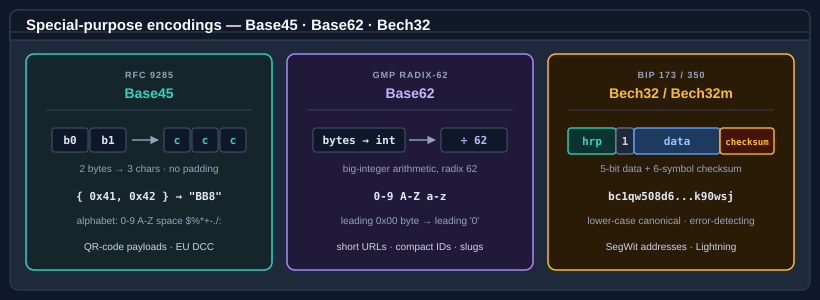

Class Base45
Provides Base45 encoding and decoding of binary data as defined by RFC 9285 — the compact alphanumeric encoding used to carry binary payloads inside a QR code's Alphanumeric mode.
Inherited Members
Namespace: Bodu.Text.Encoding
Assembly: Bodu.Text.Encoding.dll
Syntax
public static class Base45Remarks

Base45 encodes each pair of input bytes as a base-45 number written in three characters, and a trailing odd byte as
a two-character base-45 number. Unlike Base64, Base32, and Base16 it uses no padding. The 45-character alphabet is
the Alphanumeric-mode subset of US-ASCII: the digits 0-9, the upper-case letters A-Z, and the symbols
space, $, %, *, +, -, ., /, and :.
Because the space character is itself a Base45 symbol, whitespace skipping via
IgnoreWhitespace applies only to tab, carriage return, and line feed — never to the
space character. The decoder is strict per RFC 9285 §6: it rejects characters outside the alphabet, an encoded
length whose value modulo three is one, and any three-character group that decodes to a value greater than
65535 (or any two-character group greater than 255).
Examples
// Encode an arbitrary byte payload for inclusion in a QR code.
byte[] data = { 0x41, 0x42 };
string encoded = Base45.Encode(data); // "BB8"
// Round-trip.
byte[] roundtrip = Base45.Decode(encoded); // { 0x41, 0x42 }Methods
| Name | Description |
|---|---|
| Decode(char[], int, int, BaseFormatStyles) | Decodes a portion of a character array into a byte array. |
| Decode(ReadOnlySpan<char>, BaseFormatStyles) | Decodes a Base45 character span into a byte array. |
| Decode(string, BaseFormatStyles) | Decodes a Base45 string into a byte array. |
| Encode(byte[]) | Encodes |
| Encode(byte[], int, int) | Encodes a portion of |
| Encode(ReadOnlySpan<byte>) | Encodes a span of bytes into a Base45 string. |
| Encode(ReadOnlySpan<byte>, Span<char>) | Encodes a span of bytes directly into a destination character span. |
| GetEncodedLength(int) | Returns the exact number of characters required to encode |
| GetMaxDecodedLength(int) | Returns an upper bound on the number of bytes that decoding |
| GetMaxEncodedLength(int) | Returns the number of characters required to encode |
| IsBase45Digit(char) | Indicates whether |
| IsValid(ReadOnlySpan<char>, BaseFormatStyles) | Indicates whether |
| TryDecode(ReadOnlySpan<char>, Span<byte>, out int, BaseFormatStyles) | Attempts to decode a Base45 character span into a destination byte span without throwing. |
| TryEncode(ReadOnlySpan<byte>, Span<char>, out int) | Attempts to encode a span of bytes into a destination character span without throwing. |